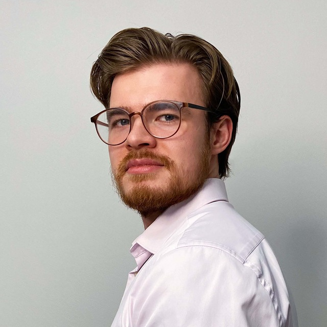

Andrei Korolev

👋
Hi there, I'm Andrei
As part of a Spanish Financial Holding, I'm in charge of Gendalf.ai — an AI-agent platform, and Artificialseed.ai — an AI venture builder.
Key Milestones in My Life
- At 17 — became a winner of the Russian National Chemistry Olympiad.
- At 18 — won gold at the International Chemistry Olympiad.
- At 19 — launched my first entrepreneurial projects: the faculty's first printed newspaper and a dark kitchen in the dorms.
- At 20 — interned at Braginsky Bureau Business Consulting.
- At 21 — continued as an entrepreneur and founded an offline project agency called "TSRU".
- At 22 — completed the Physical Culture Day challenge: ran 100 km, did 500 pull-ups and 1000 push-ups in 23 hours 56 minutes.
- At 23 — sold my share in the AI startup Slai, which we had been building for 1.5 years, to a French competitor.
- At 24 — graduated from MSU with honors and started working full-time on my productivity platform "SHAS", which had been a side-hustle since COVID shut down offline projects.
- At 25 — raised funding, reached 50,000+ customers, and sold the platform to an Azerbaijani IT company.
- At 26 — joined current company to lead the product development of Gendalf.ai.
- At 27 — started Artificialseed.ai, where I lead product portfolio and strategy.
Ten Random Facts About Me
- I had second-degree obesity as a kid.
- I once lost 20 kg in three months to impress a girl I had a crush on.
- During my university years, I was the only student from the entire chemistry faculty who was invited to the dean's office — not for trouble, but to help with projects.
- I love playing Civ5 and Dota.
- I'm a lieutenant of the Russian troops for radiation, chemical, and biological defense.
- I tried polyphasic sleep. Didn't work out. Video
- I've been vegetarian, done keto, paleo, and at least ten other less popular diets — all as experiments on myself.
- I really wanted to open my own bar (I'm a chemist, after all). So I worked as a bartender to see how it works from the inside. After five months and five different bars, I realized: getting people drunk when you're drunk — kind of fun. Getting people drunk when you're sober — absolute hell.
- My archetype is the Jester (also known as the showman or entertainer). I need to play, joke, make people laugh, perform, and be in the spotlight.
- I love plov, tom yum, sushi rolls, chicken biryani — basically anything with rice. I can't stand pasta, noodles, pies, khachapuri or any other flour-based stuff.
Links
Contacts
- Telegram: @dushoot
- Email: andrei.i.korolev@gmail.com